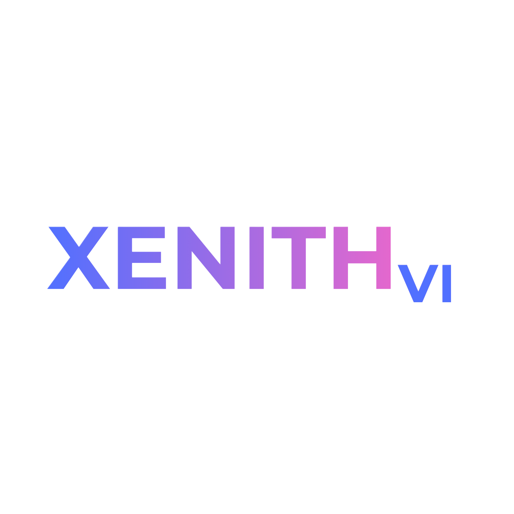

XENITH VI runs the Xbox Series X|S games you already own on Windows, through Direct3D 12 — nothing to install from us but the software itself.
A mix of the VIctory runtime and techniques proven in XCL, the Xbox Series X|S compatibility layer.
XENITH VI maps and runs a game executable that you already have on disk. It never downloads, ships, hosts, unlocks or decrypts anything — the files in, come from you.
The title's GPU work is translated to Direct3D 12 on your own video card. Shaders are translated per title; host pipelines are cached; nothing is a generic emulator shim.
cargo build --profile diag -p victory --features diagnostics
xenith.cmdor the graphical one:
xenith-ui.cmd
The launcher keeps its choices in xenith.ini next to itself —
the game's location, your cache and saves folders, everything. The runtime
keeps none of it.
Double-click, pick a mode, play. Settings menu edits every parameter: game path, cache, saves, FidelityFX, console model, imports policy, strict mode, log file, loop limit, pipelines to skip.
The same settings and modes in a window: fields and browse buttons,
a live log view, Run and Stop. Both launchers share the same
xenith.ini.
XENITH VI ships, hosts, stores, links, downloads or recommends no game software. It contains no game code, no game art or other assets, no keys or certificates, and no decryption of any protected content. The repository you can read here contains only the runtime's own source code.
XENITH VI is a compatibility layer. It does not create, modify or supply your copy of any game; it only runs the files that you yourself already possess. If you have no legally obtained copy of a game, XENITH VI cannot give you one, and you may not use it to obtain one.
By using XENITH VI you confirm that you own the game you point it at and that you are entitled to run your copy on the hardware of your choosing. What you do with the software's output — and with the files you feed it — is on you. Everything the runtime does happens with the files you gave it, under your direction, on your machine.
XENITH VI is an independent, non-commercial, open-source project. It is not affiliated with, endorsed by, or connected to Microsoft, Xbox, Rockstar Games, Take-Two Interactive, AMD, NVIDIA, or any game publisher or platform holder. All product names and trademarks are the property of their owners and are referred to only for identification.
The XENITH VI source code is licensed GPL-3.0-or-later, like the VIctory project it builds on. The license covers our code only; it does not, and cannot, cover anything it is pointed at.